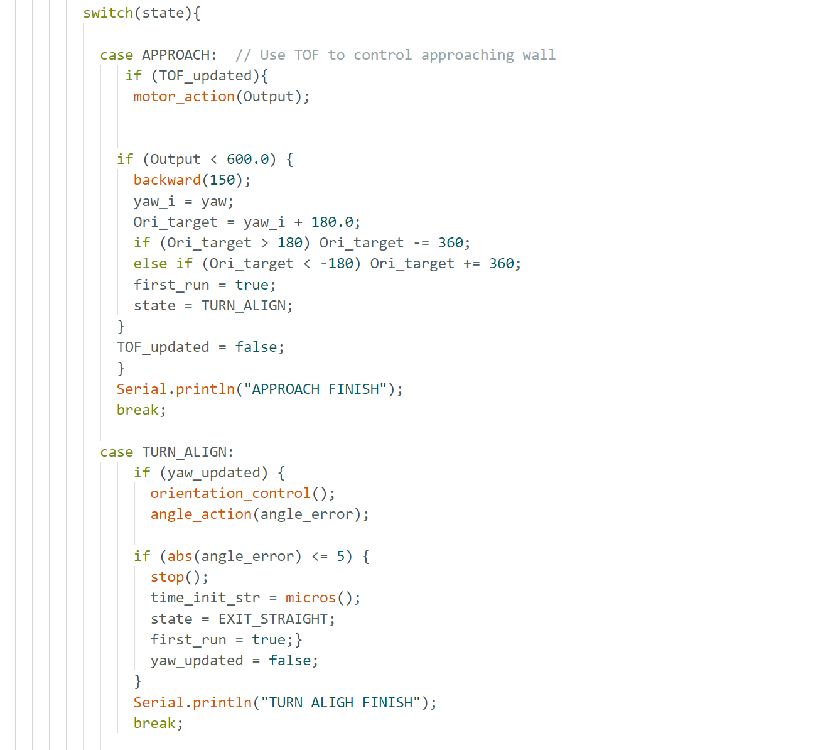
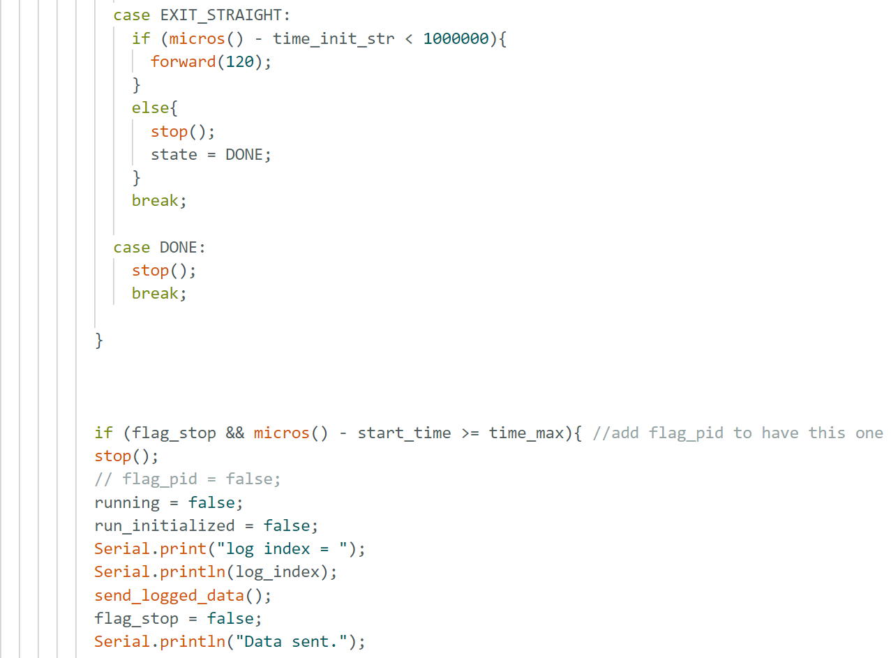
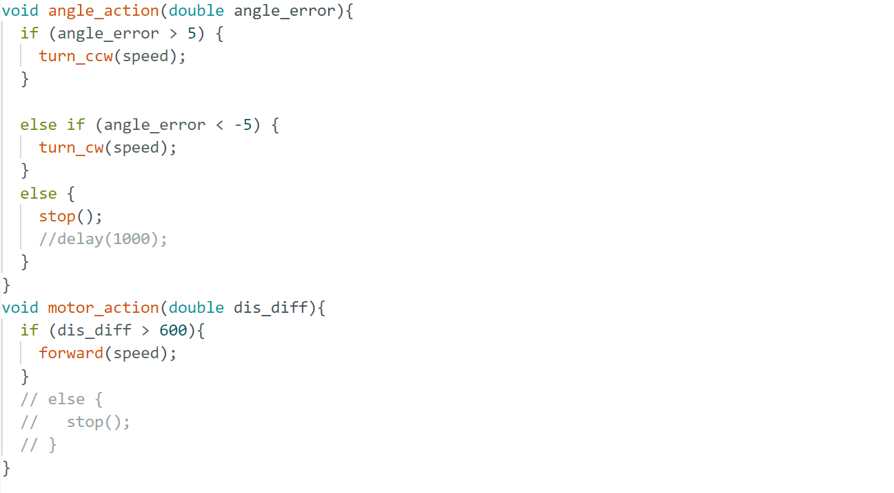
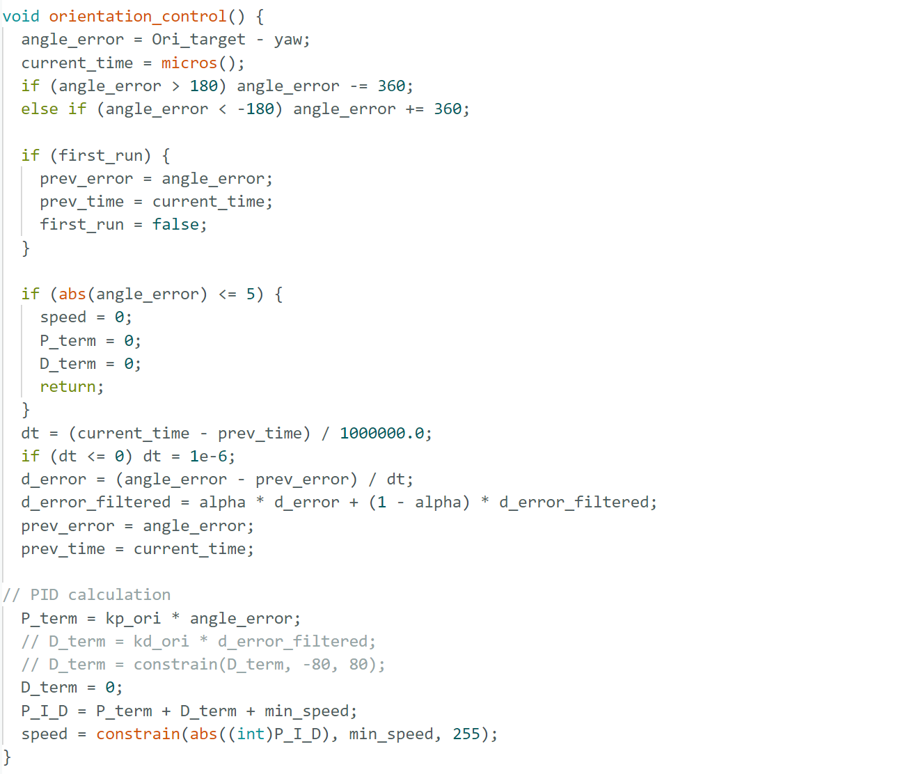
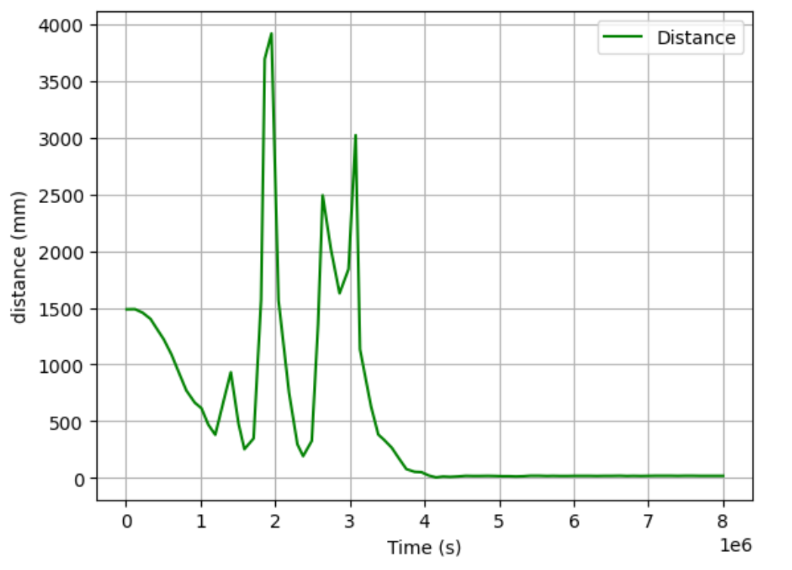
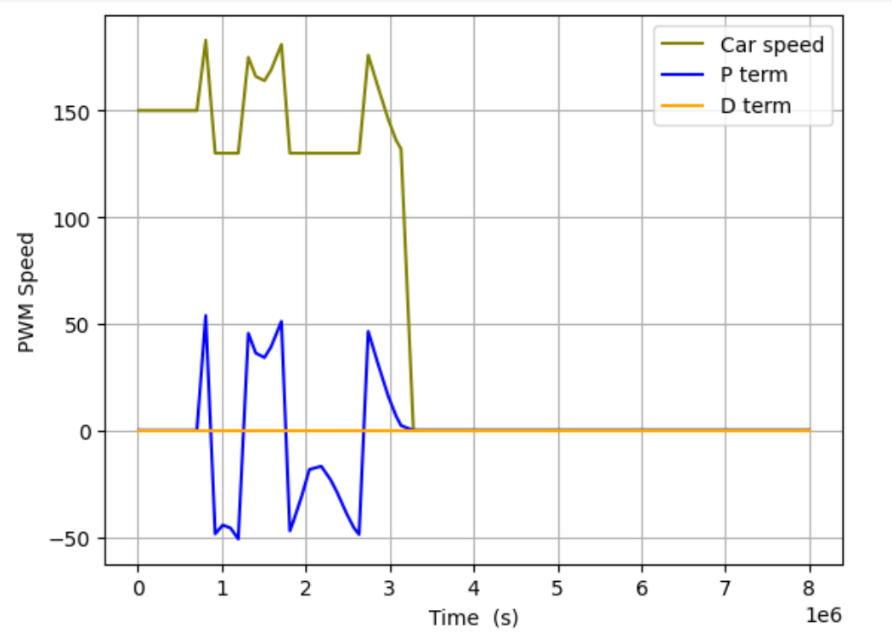
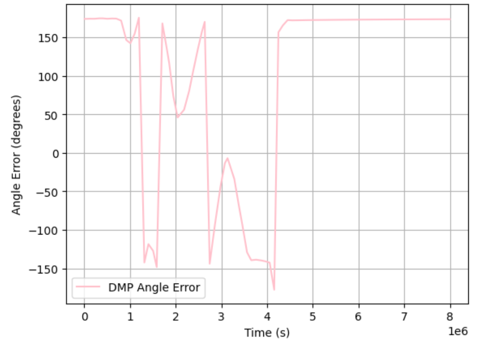
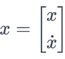
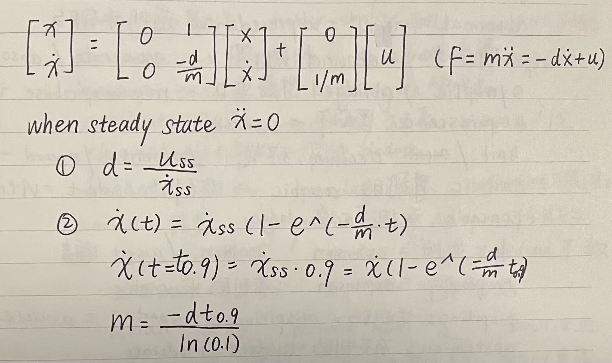
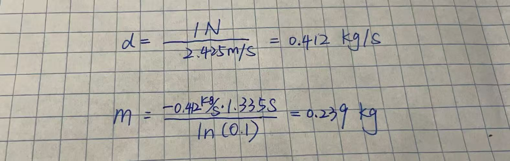

Lab 8：Stunt!
Objective
The objective of this lab is to achieve a fast stunt on the robot. The performance has to be steady which will be proved in video evidence to work at least three times. I chose to do Task B drift, as this gives me a illusion that my robot is like a F1 car can do some turns that I do not dare to achieve when driving.


To enable robot to do a series of things step by step, I incorporated a switch-mode to have it do each thing step by step: APPROACH enables robot to approach the wall to distance as close as 1 ft which is similiar to lab 5 and sets the goal of final orientation as 180 degrees from the initial orientation. To ensure that the switching happens only the robot at the appropriate position, switching of modes is inside the if statement for position check. TURN ALIGH was evolved from a function of make a turn and a function of orientation alignment like lab 6. I was experimenting with two modes doing these functions following each other. However, the control of turning 180 degrees uses the orientation adjustment code snippet inevitably which is a bit redunant to the second function. Therefore, one mode should be able to achieve the goal successfully. EXIT STRAIGHT only do the time check that it finished the orientation adjustment and approximately 2 seconds later and then stop the forward motion.


However, when it got implemented in the run, it occurred that robot cannot precsely identify the target orientation of 180 degrees from original orientation.Below are graphs from collected data points: Distance(), Speed with P control, and angle (degrees) VS time().
Watch the video of car failing to return back...


Replacing F by Newton's second law of motion, I got two states for this model:

Using two states, I can estimate drag d and mass m from measuremnt of steady input. The following is to solve this state space model.

When calculating the speed using the position differences within small dt , it occured that list of calculated speed stayed zero. To debug, I added Serial Print .
To get the steady state speed, I took data points from scatter version of plot. By intuition, I would get the linear segment of data right before the change of car direction due to avoid-crashing system. However, the speed after car started reacting to measured distance would not be steady state anymore. Therefore, I took data points before 650 mm (Setpoint 400mm + Interference Distance 250mm) and get a steady state speed of 2425.6 mm/s. The 90% rise time is roughly 1.335s and the speed at that time is 2182.5 mm/s. Therefore, the drag is 0.412 kg/s, and the mass of car system is 0.239 kg.

Reference
Thanks to TA Jack Long and Trevor Dales for discussion about PID tuning, ODR rate adjustment, and gain providing.
Thanks to Stephan's detailed orientation for DMP.
I used chatGpt for clarifying questions, debugging such as code for eliminating hard-code gain in arduino.